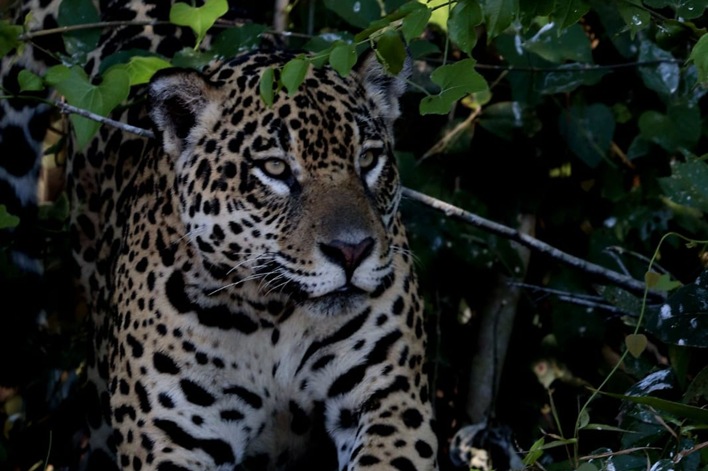
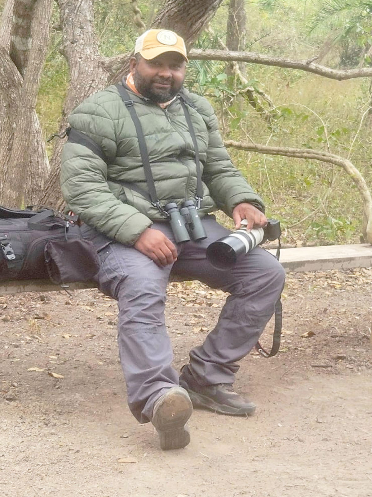

ARQUIVO DA IMAGEMassets/capa-principal.jpg

GUIA REGISTRADOCADASTUR
ARQUIVO DA IMAGEMassets/foto-perfil.jpg

CONHEÇA SEU GUIA
Experiência de campo.
Olhar de quem pertence.
Tchaco Pantaneiro conduz experiências de observação de fauna no Pantanal, unindo conhecimento local, leitura da paisagem e respeito absoluto pela vida selvagem.
Guia de turismo registrado no CADASTUR, acompanha viajantes em busca dos encontros que só o Pantanal sabe oferecer.
CADASTURPANTANALWILDLIFE
ARQUIVO DE CAMPO
Vida em todas
as suas formas.
Galerias organizadas por grandes grupos da biodiversidade pantaneira.
VIVA O PANTANAL
O próximo encontro
começa aqui.
Entre em contato diretamente com Tchaco Pantaneiro.